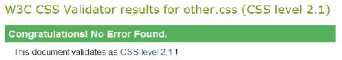
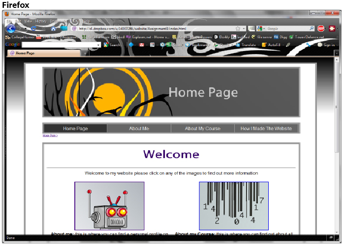
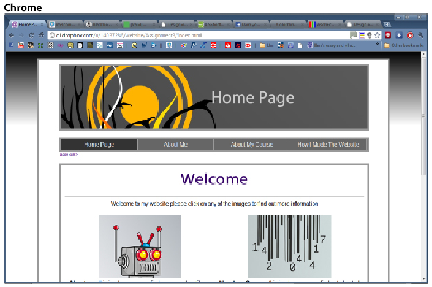
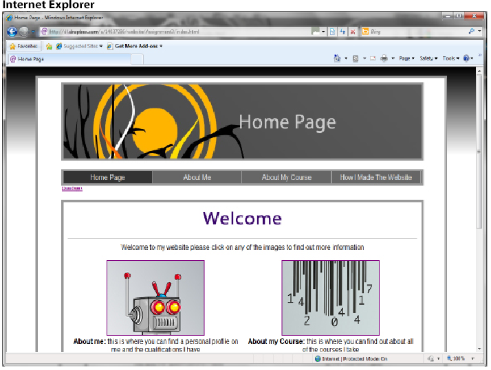
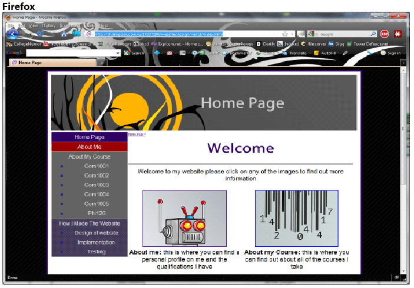
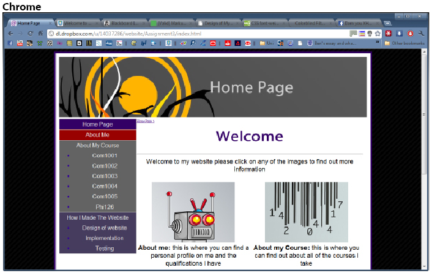
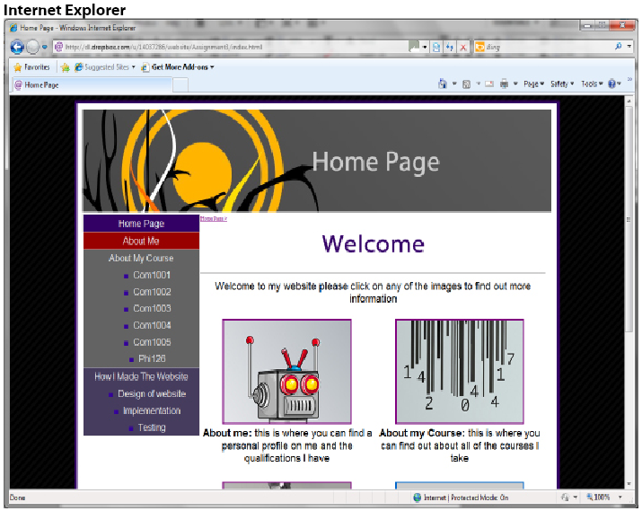

-- To view a PDF of this page please click here (displays much!! better quality images) --
To do my testing I used the validation service by W3.
http://jigsaw.w3.org/css-validator/ and http://validator.w3.org/
This service checks to see if the code abides by their rules on XHTML and CSS and if it doesn't errors messages are displayed.
Examples of testing:


I first checked the two CSS documents and they both passed the validation test

To view a full copy of all of the tests: Full Test PDF
I then checked all of the HTML documents and they all passed the validation test
Once I had made sure the website's code was valid I tested it in 4 of the major browsers to see if all of the pages loaded correctly Firefox, Chrome, Opera and Internet Explorer
I have checked every page on the website in all of the browsers as in the implementation process I used multiple browsers to make sure the website displayed correctly. (images are slightly blury due to re-sizing and not the website)




Testing of the second style sheet




Colour Blind Testing
To test for colour blindness I am going to use the website: http://colorfilter.wickline.org/ which changes the website to the colours a person with colour blindness would see. By doing this I am checking that the website can be viewed by everyone.

As you can see the website is still fully visible even with he monochrome filter applied (some of the images are missing due to the website going through a proxy server) This stye sheet works well as most of the colours in at are gray scale so it can be easily viewed by everyone.
Colour blind test for the second style

The second style is also visible in grey scale (a test for all types of colour blindness) as all of the content text is black and has a white background. The menu also displays correctly in grey scale as there is enough contrast between the white text and the background colour.

Even with the different colour blind filters turned on the menu is still visible